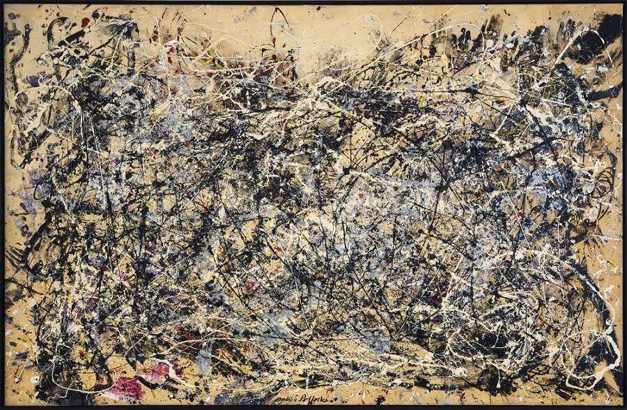

Georia es un sitio web para la enseñanza de las materias de Geografía, Historia e Historia del Arte en la Educación Secundaria Obligatoria y el Bachillerato. El objetivo es es desarrollar, recopilar y utilizar mejores herramientas para aprender ∎

"La humanidad no conoce regla mejor de conducta que el conocimiento del pasado", Polibio de Megalópolis.
Cursos
Nivel
Materia
Etapa
{%- for curso in collections.curso | getOrdered -%}